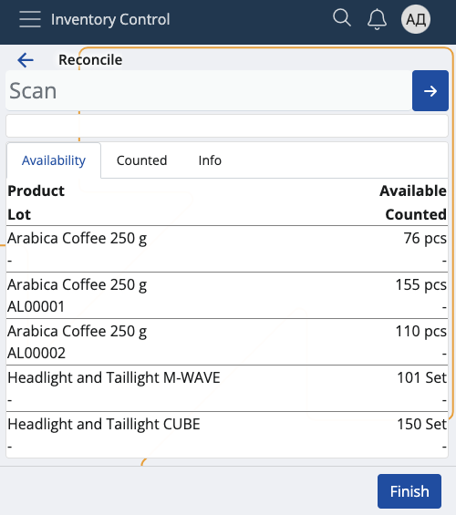
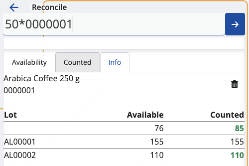
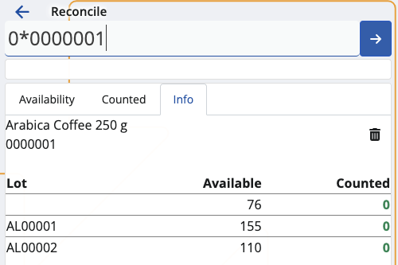

Reconcile
This section allows you to update the available quantities of your inventory or shop's products, and create reconciliation documents.
By occasionally counting everything, it may turn out that some products have fewer or higher quantities, or are no longer present.
The reverse could also be true: new products may be identified but not entered into the system.
Inventory Control allows you to reflect any of these changes within its Reconcile section.

Prerequisites
Make sure you've set the correct document type for this operation within the Settings.
You don't need an existing order to use this module. All of your store's product quantities will be listed.
Overview
Reconcile is composed of three tabs:
- Availability
- Counted
- Info
Availability
This is where all of your products are listed, together with their current quantities and lots, if present.

Counted
Here, you can find how many quantities of the products have been counted as opposed to being available in total.
For example, out of 150pcs, only 131 may be present. This will be reflected in the reconciliation document.
Info
If you tap on a product from the Availability tab, you'll be shown further information about it here.
This includes revealing its part number and additional codes, if present, as well as counted quantities.
If more lots are present, the available-counted ratio will be distributed based on the FEFO principle.

Scanning
In order to update the currently available quantities of your products, you need to use the Scan field.
It lets you quickly insert the instances of a product you want to count either manually or through barcode commands.
For a list of available barcode templates, check out the Command list.
If you're unfamiliar with the process of scanning a product and require assistance, refer to our overview.
Higher count
The currently available pcs of a product may be more than what is set as available in the system.
You can update the number by providing the higher counted value, which will be reflected in the final reconciliation document.

New count
If a product previously absent from the system is now available, you can add it by scanning it.
Its pcs will be reflected immediately, and once a reconciliation document is released, the Available bar will be updated with the new quantity.

Zero count
You can enter a Zero quantity for the products that are missing from the store.
Each zero count is interpreted as the product or lot having "0 pcs" in the final reconciliation document.

Create a reconciliation document
Once you're done scanning the product quantities, you can go back to the Counted tab to see if you've made any mistakes.
The Available value will be positioned above the Counted one, making it easy to compare past and present values.

If the counted number is greater than or equal to the available number, the Finish button will be painted in green.
Tap on it once to create your reconciliation document.
This will take you to a separate space with direct link to the document type for this operation.

By tapping on it, you'll access the Inventory module from where you can release and complete the document.

Note
The screenshots taken for this article are from v24 of the Web Client.